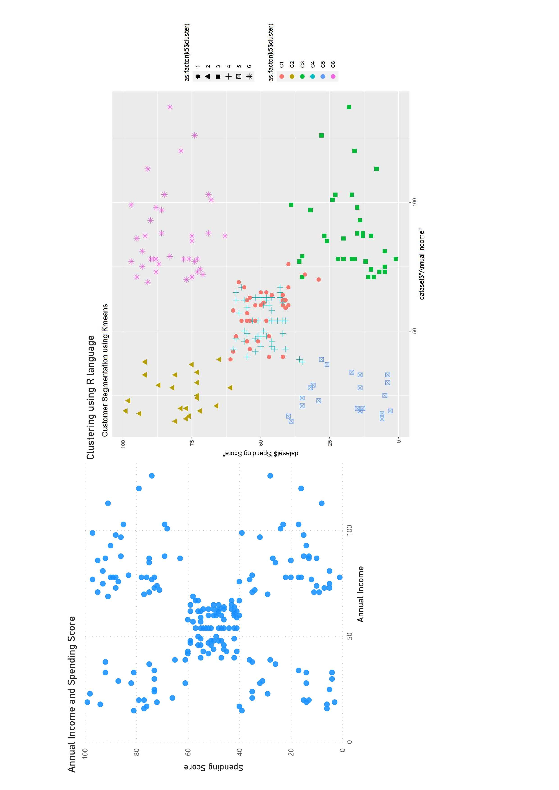
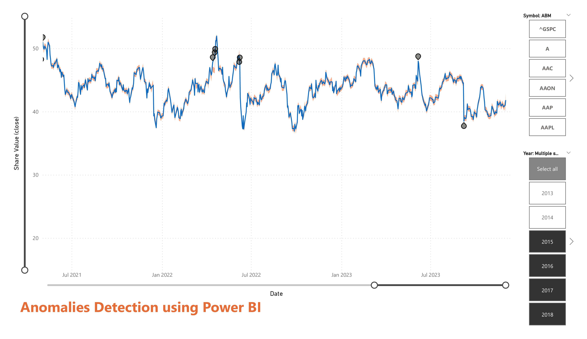
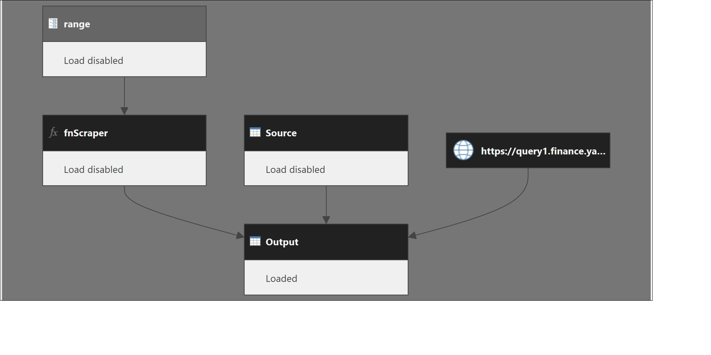
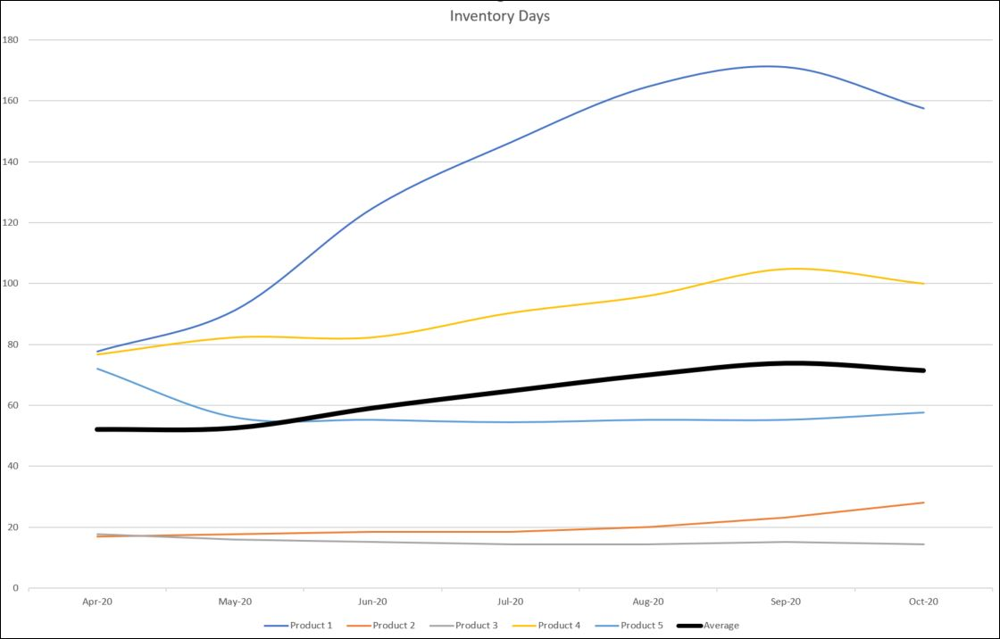

With over ten years of experience in finance, business analysis, BI, data engineering, and data science, I leverage my data skills to provide insights and recommendations that support strategic decision-making and drive business performance. I have expertise in various tools and languages, such as Power BI, Power Query, SSAS, R, DAX, MDX, and SQL, to build self-service and enterprise-scale data solutions. I also have experience in working with different ERP, SaaS, and RDBMS platforms, such as Sage, Microsoft Dynamics, Azure, NetSuite, Teradata, and Oracle. I am passionate about delivering value to my clients and stakeholders by transforming data into actionable insights

Calculated measures are the way of defining calculations in a DAX model, which allows us to calculate values based on each row.
Here is a "Calculated Rolling Total" to show the balance over time (see Marco Russo & Alberto Ferrari)
Trade Amount RT =
VAR LastVisibleDate = MAX ( Transactions[Date] )
VAR FirstVisibleDate = MIN ( Transactions[Date] )
VAR LastDateWithSales =
CALCULATE (
MAX ( Transactions[Date] ),
ALL ( Transactions )
)
VAR Result = IF (
FirstVisibleDate <= LastDateWithSales,
CALCULATE ( [Total Net Amount], Calendar_Transactions[Date] <= LastVisibleDate )
)
RETURN
Result
With Power Query (known as Get & Transform in Excel), you can import or connect to external data, and then shape that data, for example remove a column, change a data type, or merge tables, in ways that meet your needs, for example to build 3-year forecast.
Then, you can load your query into Excel, create measures in DAX and create charts and reports. Periodically, you can refresh the data to make it up to date.
Here’s a Model View for a Financial model with P&L, B/S and cash flow.
Excel Power Query with DAX is an excellent solution for calculating financial drivers for both P&L and B/S. After building 3-year forecast at year level with its budget at month level and connecting actuals you can periodically refresh the data to make it up to date.
With Power Query (known as Get & Transform in Excel), you can import or connect to external data, and then shape that data, for example remove a column, change a data type, or merge tables, in ways that meet your needs. Then, you can load your query into Excel to create charts and reports. Periodically, you can refresh the data to make it up to date.

Anomaly detection helps us enhance our line charts by automatically detecting anomalies in your time series data. It also provides explanations for the anomalies to help with root cause analysis.
M is a functional, case-sensitive mashup language designed for data transformation.
Here is an example of data cleaning and transformation for handling analysis of sales orders.
Excel Cube Functions, that allow us to pull data into a worksheet using functions like other Excel functions, can be placed anywhere and preserve a standard Excel report. When we are using Power Pivot in Excel, we can build an MDX query using CUBE functions..
An order is considered open when it has been placed but has not yet been delivered or invoiced. We are interested here in counting how many orders are open at a certain date, and what their value is.
Long-term sales orders have a duration that typically spans multiple years, which means that we cannot simply compare the sales order amount and the total amount invoiced so far. A visual created in Excel Power Query based on M language and DAX measures can solve this complex problem.

Web scraping is an automatic method to obtain large amounts of data from websites. Most of this data is unstructured data in an HTML format which is then converted into structured data in a spreadsheet or a database so that it can be used in various applications. There are many different ways to perform web scraping to obtain data from websites.
Here is an example in M where data source is https://finance.yahoo.com/ and we wanted to load and append multiple pages to build our portfolio for analysis.
With R, we can build end-to-end supply chain monitoring processes to identify potential issues and run scenario testing.
With DAX, we can build visuals to identify potential issues and run scenario testing for Inventory Management.

Days in inventory is the average time a company keeps its inventory before it is sold. Here's an example with Days Inventory at product level and its average. This ratio is usually used in Cash flow analysis and Inventory Management.

R is a programming language for statistical computing and graphics. With just a few lines of code we can extend Power BI for more complex visuals and analysis. Here's a visual for price analysis by location.'
R is a programming language for statistical computing and graphics. With just a few lines of code we can create a forecast based on dedicated libraries. Here's the forecast of weekly prices showing its point forecast and prediction intervals.'
R is a programming language for statistical computing and graphics. With just a few lines of code we can create a visual without changing or adding new table(s) or measures in DAX.'